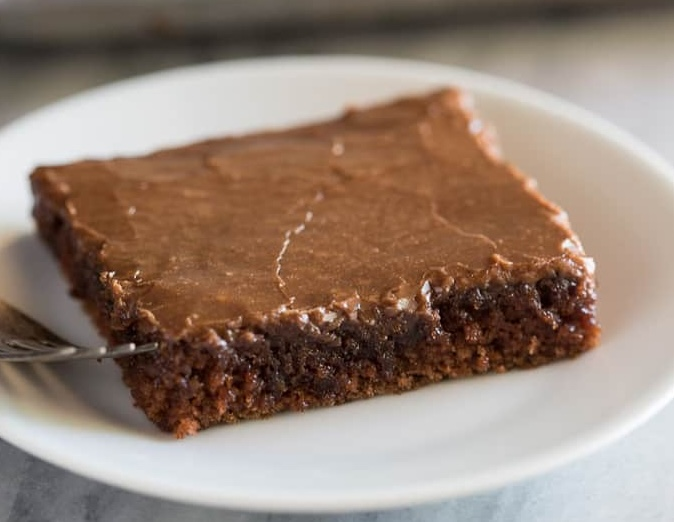

Texas Sheet Cake
Texas sheet cake offers a classic moist chocolate cake covered in a warm, fudgy frosting that melts right into the tender crumb. Baked in a large, simple sheet pan, it's the perfect crowd-pleasing dessert for any occasion that serves up pure chocolatey comfort.
This recipe is simple and is a perfect treat for a birthday, a party, or evven if you just want some cake!
